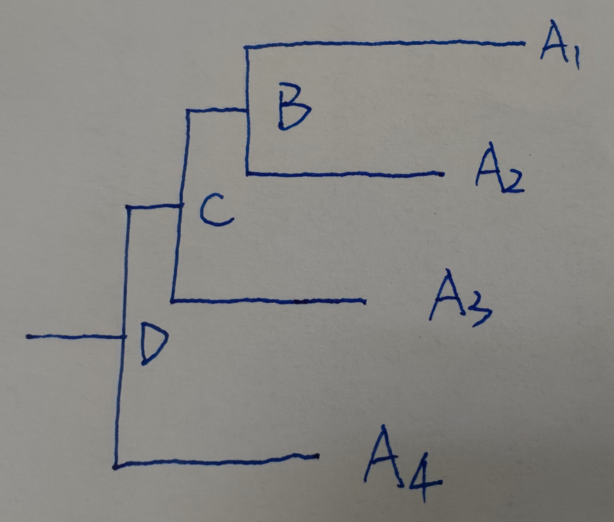

用paml的mcmctree模块估算物种分歧时间
估算分歧时间是在已经建好物种的系统发育树，根据系统发育树上已知类群间分化时间（一般来自化石或者其他研究的标定），或者根据权威研究中对特定类群的碱基替换速率的估计（例如蕨类4.79e-9 subst./syn. site/year，水稻2.5e-8 subst./syn. site/year)进行估算系统发育树上其他类群的分歧时间。
一般来说，我们尽量使用化石证据的时间（更可靠），可以在网站timetree搜索化石或者其他文章标定的类群分化时间；实在没有化石可用时，则使用碱基替换速率常数。
1.1. 原理
尝试用数学思维讲讲估算分歧时间的原理：即路程=速度*时间，经过多长时间（地质时间），通过多大的速度（碱基替换速率），完成从祖先物种的DNA到现在物种的DNA的变化，总体上的碱基替换积累即路程。
假设下面系统发育树示意图(A4,(A3,(A2,A1)B)C)D;是有枝长有根树，A1-A4都是现在的物种（代表时间也已知），目的是要估算B和C节点的时间。

- 第一种情况，当已知D节点时间时，求B节点时间（C节点同理）
由于A1的时间点已知（即现在），那么从D到A1的时间跨度是已知的；从D到A1的枝长是已知的，枝长代表的是这个过程的碱基替换数量，即路程；时间和路程已知，我们可以算出速度；同时，从D到B的路程也是已知的（因为枝长已知），那么在假设匀速的前提下，我们也可以算出从D到B的时间，这样即可标定B（即A1和A2分歧时间）的时间。
- 第二种情况，当已知速度（碱基替换速率，常数）时，求B节点时间
由于从B到A1的枝长是已知的，枝长代表的是这个过程的碱基替换数量，即路程；速度已知，那么我们可以算得B到A1的时间跨度，由于A1的时间即现在，时间跨度就是B节点的时间。
以上解释是非常简化的理解这个估算过程，实际情况复杂得多，物种不会匀速进行碱基替换，所以软件会使用算法进行精细化估算。
1.2. 估算分歧时间常用软件
- beast：Linux也调用图形界面
- paml的mcmctree：推荐
- r8s：非常快
1.3. paml的mcmctree估算分歧时间
mcmctree通过调用baseml(核苷酸数据)、codeml（密码子或者氨基酸数据）估算模型参数，之后估算分歧时间；
指南一和指南二只适用于核苷酸数据；氨基酸数据看指南三
1.3.1. 指南一：paml常规方法估算分歧时间
paml常规方法只适用于核苷酸数据；
- input files
准备3个输入文件
- input.tre - 带有校准点的有根树文件
把iqtree/raxml-ng等建树软件中得到的树文件中的支持率和枝长信息删除，添加化石校准点时间信息（格式是时间范围’>0.23<0.26’或者时间点‘@0.245’)；再在首行添加两个数字（物种数量和树的数量），空格隔开，可得到input.tre文件。
1 | 5 1 |
文件内容分两行：第一行表述树中有n个物种，共计1个树，两个数值之间用空分割；第二行则是Newick格式树信息，其中包含有校准点信息。校准点信息一般指95%HPD（Highest Posterior Density）对应的置信区间；校准点单位是100MYA（软件说明文档中使用该单位，也推荐使用该单位，若使用其它单位，后续配置文件中的相关参数也需要对应修改）。此外，Newick格式的树尾部一定要有分号，没有的话程序可能不能正常运行。
- input.phy - 多序列比对文件（phylip格式）
PAML要求输入的Phylip格式，其物种名和后面的序列之间至少间隔两个空格（是为了允许物种名的属名和种名之间有一个空格）。
python的SeqIO的转换格式模块获得的phylip和nexus格式都不行。
推荐用echo $(cat input.align.fa) |sed "s/ >/\n/g" |sed "s/>//g"|sed "s/ / /g" >input.phy手动转化align好的fas格式文件；再在首行添加两个数值，空格隔开，物种数量和碱基数量；实现fasta2phylip。
如果有多个区域的序列，比如exon和intron，LSC、SSC和IR，不同的基因，密码子的第一二三位，需要不同的模型分开估算，那可以把各自区域分别align之后制作多个phy文件，再合并到一起，用空行隔开，组成input.phy文件。（此时mcmctree.ctl的ndata值为区域的个数）。
- mcmctree.ctl - mcmctree程序的配置文件
1
2
3
4
5
6
7
8
9
10
11
12
13
14
15
16
17
18
19
20
21
22
23
24
25
26
27
28
29
30
31
32
33
34
35
36
37
38
39seed = -1 *设置随机数作为seed，-1代表使用系统当前时间作为随机数
seqfile = input.phy *输入多序列比对文件
treefile = input.tre *带校准点（化石时间）的有根树文件
outfile = mcmc.out *输出文件
mcmcfile = mcmc.txt *输出的mcmc信息文件，可用Tracer软件查看
seqtype = 0 * 设置多序列比对数据类型；0：核酸数据；1：密码子比对数据；2：氨基酸数据；
usedata = 1 * 是否利用多序列比对数据；
* 0: no data不使用，不会进行likelihood估算，会快速得到mcmc树，但分歧时间不可用;
* 1:seq like，使用多序列比对数据进行likelihood估算，正常进行mcmc; usedata=1时model无法选择；
* 2:normal 进行正常的approximation likelihood分析，不读取多序列比对数据，直接读取当前目录的in.BV文件，in.BV是由usedata = 3时生成的out.BV重命名得来；此外，由于程序BUG，当设置usedata = 2时，一定要在改行参数后加 *，否则程序报错 Error: file name empty..；
* 3：程序利用多序列比对数据调用baseml/codeml命令对数据进行分析，生成out.BV文件。由于mcmctree调用baseml/codeml进行估算的参数设置可能不太好（特别时对蛋白序列进行估算时），推荐自己修改软件自动生成的baseml/codeml配置文件，然后再手动运行baseml/codeml命令，再整合其结果文件为out.BV文件。
ndata = 1 * 输入的多序列比对的数据区域的数量；
clock = 2 * 设置分子钟算法，1: global clock，表示所有分支进化速率一致; 2: independent rates，各分支的进化速率独立且进化速率的对数log(r)符合正态分布; 3，correlated rates方法，和方法2类似，但是log(r)的方差和时间t相关。
* TipDate = 1 100 *当外部节点由取样时间时使用该参数进行设置，同时该参数也设置了时间单位。具体数据示例请见examples/TipData文件夹。
RootAge = '<10' * constraint on root age, used if no fossil for root.设置root节点的分歧时间，一般设置一个最大值。
model = 4 * 0:JC69, 1:K80, 2:F81, 3:F84, 4:HKY85；*设置碱基替换模型；当设置usedata = 1时，model不能使用超过4的模型，所以usedata = 1时用model = 4；usedata不等于1时，用model = 7，即GTR模型；
alpha = 0.5 * alpha for gamma rates at sites；*核酸序列中不同位点，其进化速率不一致，其变异速率服从GAMMA分布。一般设置GAMMA分布的alpha值为0.5。若该参数值设置为0，则表示所有位点的进化速率一致。此外，当userdata = 2时，alpha、ncatG、alpha_gamma、kappa_gamma这4个GAMMA参数无效。因为userdata = 2时，不会利用到多序列比对的数据。
ncatG = 5 * No. categories in discrete gamma；设置离散型GAMMA分布的categories值。
cleandata = 0 * remove sites with ambiguity data (1:yes, 0:no)?
BDparas = 1 1 0.1 * birth, death, sampling；*设置出生率、死亡率和取样比例。若输入有根树文件中的时间单位发生改变，则需要相应修改出生率和死亡率的值。例如，时间单位由100Myr变换为1Myr，则要设置成".01 .01 0.1"。
kappa_gamma = 6 2 * gamma prior for kappa；设置kappa（转换/颠换比率）的GAMMA分布参数。
alpha_gamma = 1 1 * gamma prior for alpha；设置GAMMA形状参数alpha的GAMMA分布参数。
rgene_gamma = 2 20 1 * gamma prior for rate for genes；设置序列中所所有位点平均[碱基/密码子/氨基酸]替换率的Dirichlet-GAMMA分布参数：alpha=2、beta=20、初始平均替换率为每100million年（取决于输入有根树文件中的时间单位）1个替换。若时间单位由100Myr变换为1Myr，则要设置成"2 2000 1"。总体上的平均进化速率为：2 / 20 = 0.1 个替换 / 每100Myr，即每个位点每年的替换数为 1e-9。
sigma2_gamma = 1 10 1 * gamma prior for sigma^2 (for clock=2 or 3)；设置所有位点进化速率取对数后方差（sigma的平方）的Dirichlet-GAMMA分布参数：alpha=1、beta=10、初始方差值为1。当clock参数值为1时，表示使用全局的进化速率，各分枝的进化速率没有差异，即方差为0，该参数无效；当clock参数值为2时，若修改了时间单位，该参数值不需要改变；当clock参数值为3时，若修改了时间单位，该参数值需要改变。
finetune = 1: .1 .1 .1 .1 .1 .1 * times, rates, mixing, paras, RateParas；冒号前的值设置是否自动进行finetune，一般设置成1，然程序自动进行优化分析；冒号后面设置各个参数的步进值：times, musigma2, rates, mixing, paras, FossilErr。由于有了自动设置，该参数不像以前版本那么重要了，可能以后会取消该参数。
print = 1 *设置打印mcmc的取样信息：0，不打印mcmc结果；1，打印除了分支进化速率的其它信息（各内部节点分歧时间、平均进化速率、sigma2值）；2，打印所有信息。
burnin = 1000000 *将前1000000次迭代burnin后，再进行取样（即打印出该次迭代估算的结果信息，各内部节点分歧时间、平均进化速率、sigma2值和各分支进化速率等）。
sampfreq = 10 *每10次迭代则取样一次
nsample = 500000 *当取样次数达到该次数时，则取样结束，同时结束程序。
*** Note: Make your window wider (100 columns) when running this program.
- mcmctree运行
运行mcmctree mcmctree.ctl即可获得结果。
1.3.2. 指南二：用approximate likelihood calculation估算分歧时间【推荐】
approximate likelihood法比常规方法快很多，而且可以选择更复杂的GTR模型（model = 7）；推荐使用。
input files
输入文件和指南一一致，只是mcmctree.ctl的usedata需要修改为，usedata = 3【一定要改】；建议model修改为model = 7【建议改】。mcmctree usedata = 3运行
运行mcmctree mcmctree.ctl；用Maximum Likelihood方法估算枝长和Hessian信息；
若比对数据只有一个区域，即ndata = 1，则等待运行完成，生成out.BV；
若比对数据多于一个区域，即ndata > 1，mcmctree会多次调用baseml依次处理每个区域，可等待运行完成，也可以做手动并行运行，以加快分析速度；
手动并行多个区域的操作：- mcmctree运行起来后，从第一区域开始，生成一套tmp0001文件(包括tmp0001.ctl,tmp0001.txt,tmp0001.trees），ctrl+C切断程序，会自动进入下一区域分析，生成一套tmp0002文件，继续ctrl+C切断程序，直到最后一个区域的tmp文件也生成。
- 对每个区域的tmp文件分别放置一个单独的目录，并在单独目录内运行
baseml tmp*.ctl，从而实现多区域并行运行 - 所有区域的baseml运行结束后，会在各自目录生成rst2文件，把所有目录的rst2文件cat合并，就是out.BV文件；
- mcmctree usedata = 2运行
把input.phy，input.tre，mcmctree.ctl，out.BV四个文件复制到新建目录下，mcmctree.ctl的usedata改为usedata = 2，out.BV重命名为in.BV；
运行mcmctree mcmctree.ctl即可获得结果。
1.3.3. 指南三：用approximate likelihood calculation估算氨基酸数据的分歧时间
氨基酸数据不能用usedata = 1这种模式，只能用approximate likelihood calculation估算分歧时间；方法与指南二类似。
input files
输入文件和指南一一致，mcmctree.ctl的参数修改：usedata = 3，model = 2，seqtype = 2；增加一行aaRatefile = wag.dat；
同时把paml软件安装位置下的wag.dat复制一份到当前目录；
wag.dat是氨基酸替换速率的数据，与model = 2对应，也可以选用其他的氨基酸替换率数据，就用其他的替换率文件(*.dat)；mcmctree usedata = 3运行
运行mcmctree mcmctree.ctl；用Maximum Likelihood方法估算枝长和Hessian信息；
若比对数据只有一个区域，即ndata = 1，则等待运行完成，生成out.BV；
若比对数据多于一个区域，即ndata > 1，mcmctree会多次调用codeml依次处理每个区域，可等待运行完成，也可以做手动并行运行，以加快分析速度；
手动并行多个区域的操作：- mcmctree运行起来后，从第一区域开始，生成一套tmp0001文件(包括tmp0001.ctl,tmp0001.txt,tmp0001.trees），ctrl+C切断程序，会自动进入下一区域分析，生成一套tmp0002文件，继续ctrl+C切断程序，直到最后一个区域的tmp文件也生成。
- 对每个区域的tmp文件分别放置一个单独的目录，修改所有tmp*.ctl内的aaRatefile = wag.dat为wag.dat的相对位置或绝对，如aaRatefile = ../wag.dat，然后在每一个单独目录内运行
codeml tmp*.ctl； - 所有区域的codeml运行结束后，会在各自目录生成rst2文件，把所有目录的rst2文件cat合并，就是out.BV文件；
- mcmctree usedata = 2运行
把input.phy，input.tre，mcmctree.ctl，out.BV四个文件复制到新建目录下，mcmctree.ctl的usedata改为usedata = 2，out.BV重命名为in.BV；
运行mcmctree mcmctree.ctl即可获得结果。
1.3.4. 结果文件
程序在运行过程中，会在屏幕生生成一些信息。比较耗时间的步骤主要在于取样的百分比进度：
第一列：取样的百分比进度。
第2-6列：参数的接受比例。一般，其值应该在30%左右。20-40%是很好的结果，15-70%是可以接受的范围。若这些值在开始时变动较大，则表示burnin数设置太小。
第7-x列：各内部节点的平均分歧时间，第7列则是root节点的平均分歧时间。若有y个物种，则总共有y-1个内部节点，从第7列开始后的y-1列对应这些内部节点。
倒数第3-x列：r_left值。若输入3各多序列比对结果，则有3列。x列的前一列是中划线 - 。
倒数第1-2列：likelihood值和时间消耗。
屏幕信息最后，给出各个内部节点的分歧时间(t)、平均变异速率(mu)、变异速率方差(sigma2)和r_left的Posterior信息：均值(mean)、95%双侧置信区间(95% Equal-tail CI)和95% HPD置信区间(95% HPD CI)等信息。此外，倒数第二列给出了各个内部节点的Posterior mean time信息，可以用于收敛分析。
在当前目录下，生成几个主要结果：
FigTree.tre 生成含有枝长（分歧时间）的超度量树文件，分歧时间和分歧时间的95%HPD区间。
1
2
3
4
5
6#NEXUS
BEGIN TREES;
UTREE 1 = (((B: 0.408365, (A1: 0.107333, A2: 0.107333) [&95%={0.0749432, 0.126365}]: 0.301032) [&95%={0.285365, 0.478163}]: 0.362000, C: 0.770366) [&95%={0.53864, 0.90012}]: 0.047786, D: 0.818151) [&95%={0.572406, 0.958116}];
END;FigTree.tre文件的解释：其中A1或A2冒号:后的0.107333为A1和A2的枝长，代表A1和A2分歧时间，单位是亿年，(A1,A2)外的[&95%={0.0749432, 0.126365}]为A1和A2分歧时间的95%置信区间；A1或A2的枝长0.107333加上(A1,A2)之后的祖先枝长0.301032之和等于B的枝长0.408363，即B与A1和A2祖先种的分歧时间为0.408363亿年，95%置信区间为[&95%={0.285365, 0.478163}]；依此类推。
mcmc.txt MCMC取样信息，包含各内部节点分歧时间、平均进化速率、sigma2值等信息，可以在Tracer软件中打开。通过查看各参数的ESS值，若ESS值大于200，则从一定程度上表示MCMC过程能收敛，结果可靠。
out.txt 包含由较多信息的结果文件。例如，各碱基频率、节点命名信息。
1.4. 一些注意事项
以下来自陈连福的教程。
- 如何设置burnin、sampfreq和nsample值？
- 一般推荐设置nsample值不小于20k(官方示例数据中设置的值)，只有当该值较大时，求得的均值才有意义。
- sampfreq表示取样间隔，一般设置为10，100或1000。nsample 和sampfreq 的乘积表示有效迭代的次数，这些迭代越准确，次数越大，则结果越好，越趋于收敛。当然，次数越大，越消耗时间。若数据量很小，可以考虑设置sampfreq为1000；若数据量大，每次迭代耗时多，则考虑设置sampfre为10。
- (burnin)其结果，则设置burnin值。要设置足够大的burnin值，保证在程序运行时当迭代比例达到0% (即burnin结束) 时，其参数的接受比例值较好，在30%左右且随迭代次数增多时变动幅度不大。推荐设置burnin的迭代次数为有效次数的10~40%。PAML软件时先burnin后再记录有效迭代的参数值；其它软件如BEAST则记录所有的参数值后，最后汇总时burnin掉一定比例的数据。
- 总体上，其实就是两个参数：burnin掉的迭代次数和用于估算结果的有效迭代次数。由于需要根据有效迭代数据来进行均值估算，若记录每次迭代的参数，则生成的mcmc.txt文件行数过多，文件太大，汇总时也消耗估算。于是设置没隔一定迭代轮数取样一次，这样生成的mcmc.txt文件不会太大，对最后的均值估算影响不大。
- 个人推荐有效迭代次数 1
10M 次，burnin 0.24M次。按时间消耗从少到多的参数值：
数据简单时，进行0.5M迭代次数，burnin比例40%：{ burnin 200k; sampfreq 10; nsample 50k }
数据中等时，进行1M迭代次数，burnin比例40%：{ burnin 400k; sampfreq 10; nsample 100k }
数据复杂时，进行5M迭代次数，burnin比例20%：{ burnin 1000k; sampfreq 10; nsample 500k }
数据巨大时，进行10M迭代次数，burnin比例20%：{ burnin 2000k; sampfreq 100; nsample 100k }
使用相应参数进行分析后，若不满意其收敛程度，则选用更多迭代次数的参数。
- 如何检测MCMC的结果是否达到收敛状态？
收敛的意思，即经过很多次迭代后，得到的MCMC树的各枝长趋于一个定值，变动非常小。于是，最直接的检测方法是：分别使用不同的Seed值进行mcmctree或infinitesites进行两次或多次分析，然后比较两个结果树是否一致，实际就是比较树文件中各内部节点的Height值（分歧时间 / Posterior time）。比较方法可以有多种:
- 结果文件mcmc.txt中每行记录了一个取样的结果，包含各内部节点的Posterior time值，即进化树的Height值，对该mcmc.txt文件进行分析，得到每个内部节点的Posterior mean time值。然后作图 （官方说明文档第6页图示），横坐标表示第一次运行的各内部节点的分歧时间均值、纵坐标表示第二次运行的各内部节点的分歧时间均值。该散点图要表现出非常明显的对角线，才认为达到收敛。这时可以考虑估算其相关系数来判断是否符合线性。
- 我觉得第一种官方文档给的方法比较麻烦且是否符合对角线没有明确的定义，于是就直接比较两次结果树文件中的各枝长。估算各枝长总的偏差百分比，当偏差百分比低于0.1%，则认为两次结果非常吻合，差异低于0.1%，认为达到收敛。
- 此外，还可以使用Tracer分析mcmc.txt文件，检测其ESS值，一般认为该值高于200，则可能达到收敛。该方法可用于辅助检测。最后，若不收敛，则需要提高burnin、nsample值，重新运行程序。
- 使用infinitesites输入含有枝长信息的系统进化树快速进行分歧时间估算
infinitesites程序进行分歧时间估算时，其假设前提为多序列比对的序列长度为无限长。相比于正常的mcmctree命令，要求额外多输入一个名为 FixedDsClock23.txt 的文件。该文件中存放了相应的带有枝长信息的系统发育树。该文件中系统发育树的拓扑结构要和input.tre一致。推荐使用baseml命令输入input.trees和多序列比对结果估算枝长。
FixedDsClock23.txt 文件内容示例：
1 | 7 |
运行infinitesites命令进行分歧时间估算：infinitesites mcmctree.ctl
使用infinitesites进行分歧时间估算时，程序要求输入多序列比对文件。虽然程序读取了序列信息，但在估算时会忽略其序列信息。